Camera调试篇-Camera Tuning基础
AWB（Auto White Balance）
色温
光色并存，对物体颜色的感知离不开光源的照射，相同物体在不同光源照射下所表现的颜色有所不同。
色温是表示光源光谱成分的概念。某一光源的色度与某一温度下的绝对黑体的色度相同时，绝对黑体的开尔文温度即为该光源的色温。
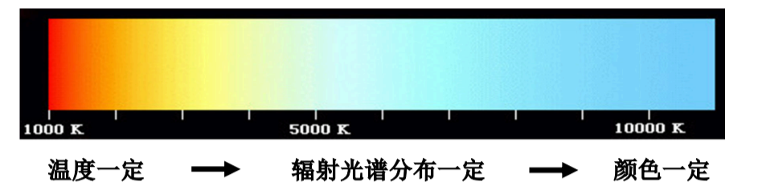
1 | Tips: |
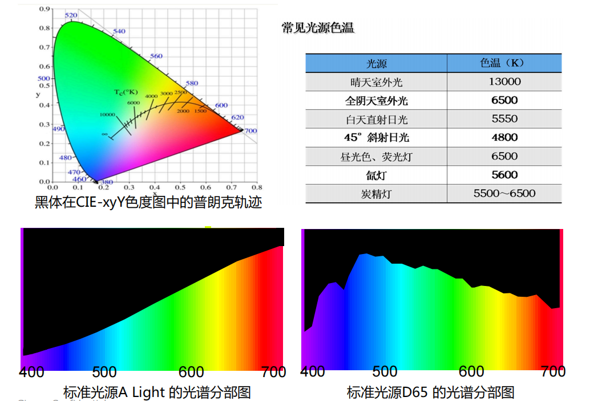
AWB的光学意义
光谱的颜色会随着色温的变化而变化：色温升高，光源的颜色由暖色向冷色过渡，光源中的能量分布也由红光端向蓝光端偏移。
人眼及视觉神经对色温较强的生理和心理的自适应性，能够将大多数光源下灰色在人大脑内还原成灰色，而Image Sensor 没有这种自适应能力。因此，拍出来的照片需经过算法白平衡处理，以保证和人眼看到的颜色保持一致。
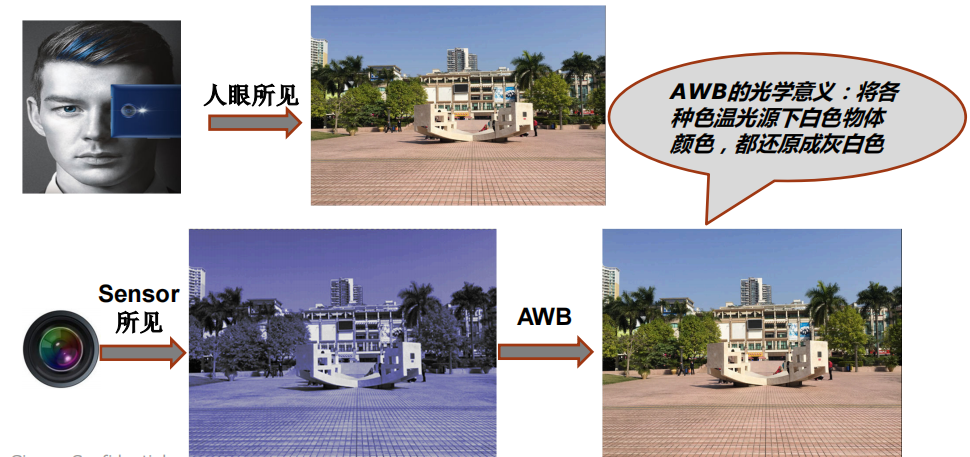
AWB的算法原理
理论基础：基于图像低阶特征的Gray World假设。
假设物体表面的平均反射是无色差的，对于一幅有着大量色彩变化的图像， 三个分量的平均值趋于同一灰度值 。 从物理意义上讲，灰色世界法假设自然界景物对于光线的平均反射的均值在总体上是个定值，这个定值近似地为“灰色”。 颜色平衡算法将这一假设强制应用于待处理图像，可以从图像中消除环境光的影响，获得原始场景图像。
缺点: 当图像场景颜色并不丰富时，尤其出现大块单色物体时，该算法常会失效。
Simple Gray World：选取图像中认为是接近灰色的区域作为有效区域，将所有的有效区域的R/G、B/G值做加权平均，得到 (R/G)_mean、(B/G)_mean，然后以G 为基准，将(R/G)_mean、(B/G)_mean取倒数、做归一，计算出最终的Rgain、Ggain、Bgain赋值到原始图像。
White World：选取亮度较高并且接近灰色的区域作为有效区域。
算法实现流程：
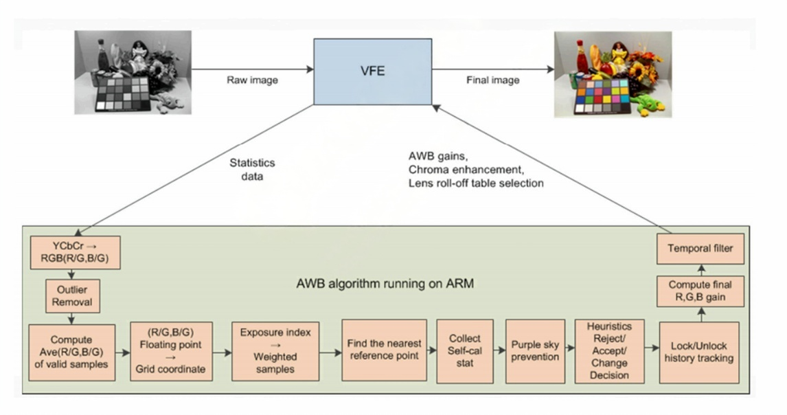
Reference Piont：
采集18%灰卡在各种（九种）色温光源下RAW图像，测量图像的R/G、B/G值，将这些点及点之间的连线作为参考点和参考线。
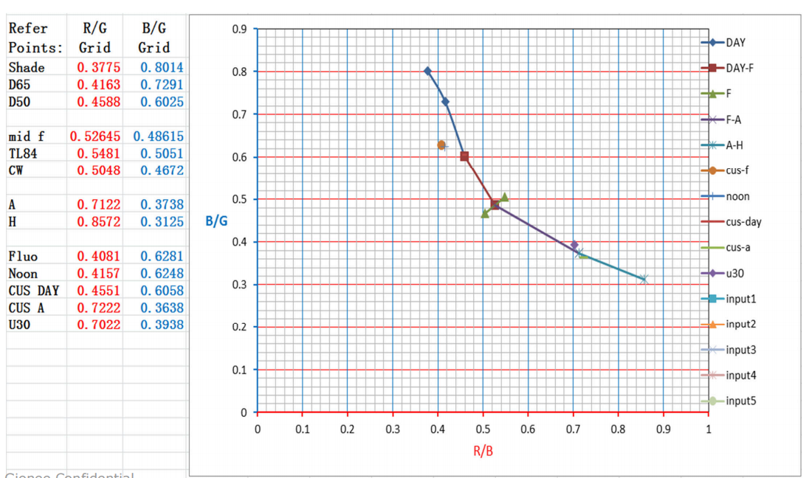Outlier Removal
将RAW图分割成64X48个Block，通过Bounding Box剔除无效区域
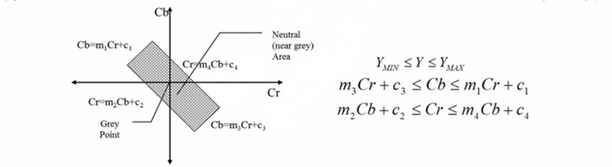Weighting Table
根据光源亮度特性，赋予不同Referren Point的决策权重。
计算所有统计区域的R/G、B/G算术平均值；确定所有有效区域的权重，计算
R/G、B/G加权平均值。
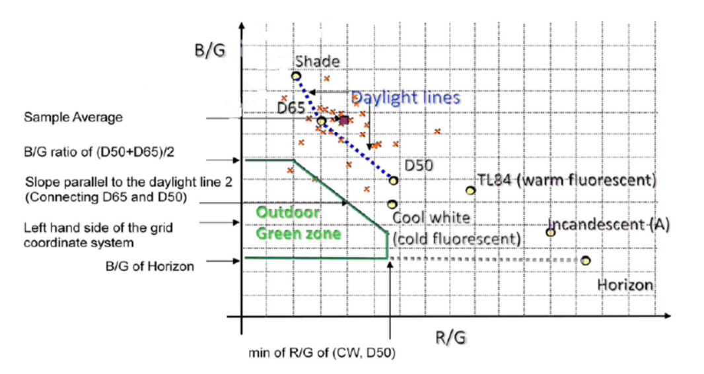特殊场景之“Green-Zone”
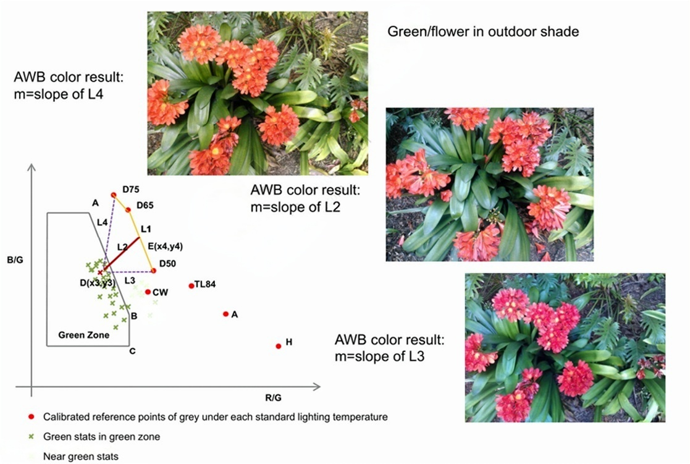特殊场景之“Purple Sky Prevention”
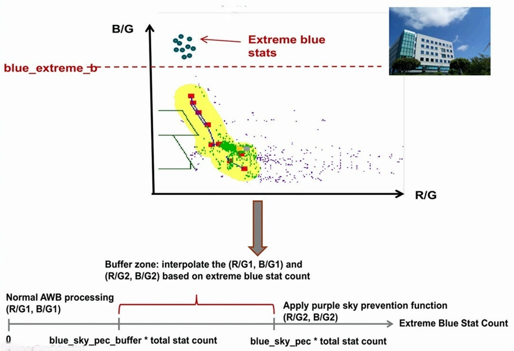特殊场景之“Misleading Zone”
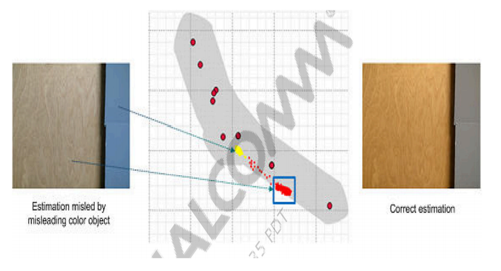
AE (Auto Exposure)
18%灰
人眼的结构中，有瞳孔可以控制通光量，有杆状感光细胞和椎状感光细胞以适应不同的光强，可见即使人眼有着很高的感光宽容度，依然有亮度调节系统，以适应光强变化。
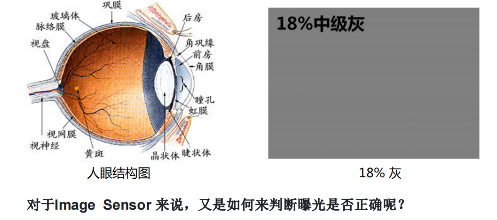
18%灰理论模型：假设室内室外景物，其平均的反光系数大约为 18%，而色彩均值，那么整幅图像可以认为是一种中灰的色调。这样，可以通过对反光率为 18%的灰卡拍摄，调整Sensor 的曝光和增益，使其亮度量化为18%的灰卡亮度（255*18%=47）。然后，对于通常的景物，就能自动的得到正确的曝光了。
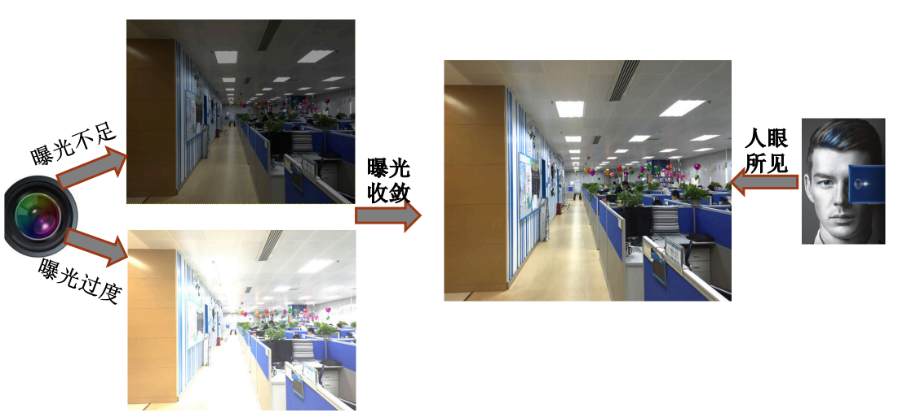
曝光公式
对于Image Sensor而言，最终的目标亮度是由Shutter(曝光时间), ISO(曝光增益)，Aperture(镜头光圈)，BV(环境亮度)决定的。
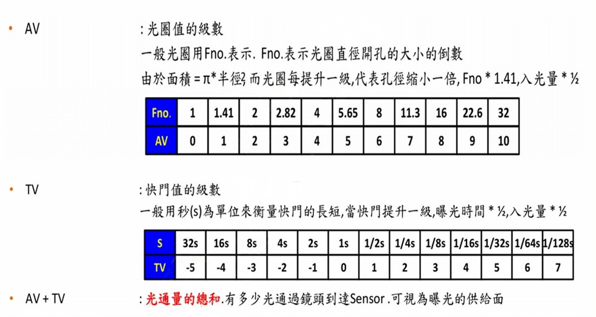
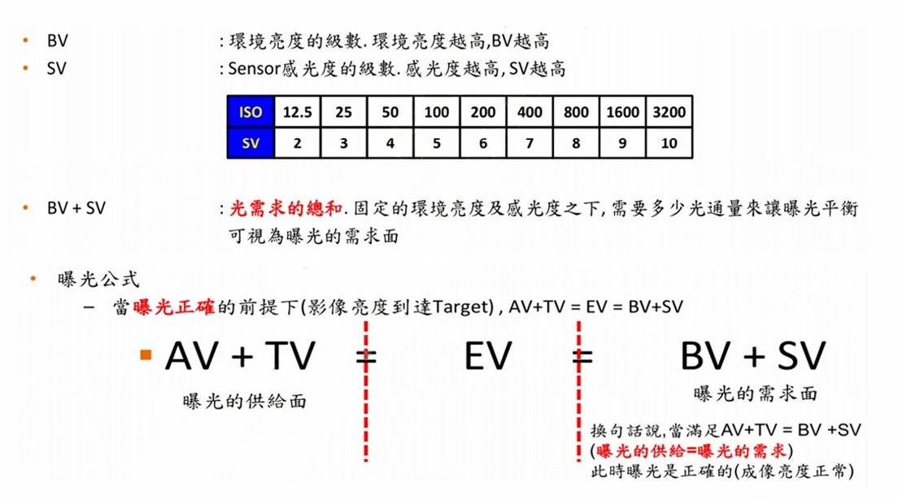
手机拍摄特定景物时，BV(环境亮度)恒定，AV（光圈）恒定，自动曝光的本质是通过调整TV（曝光时间）和SV(曝光增益)来匹配 EV（光通量的总和，即目标亮度）。
AE算法原理
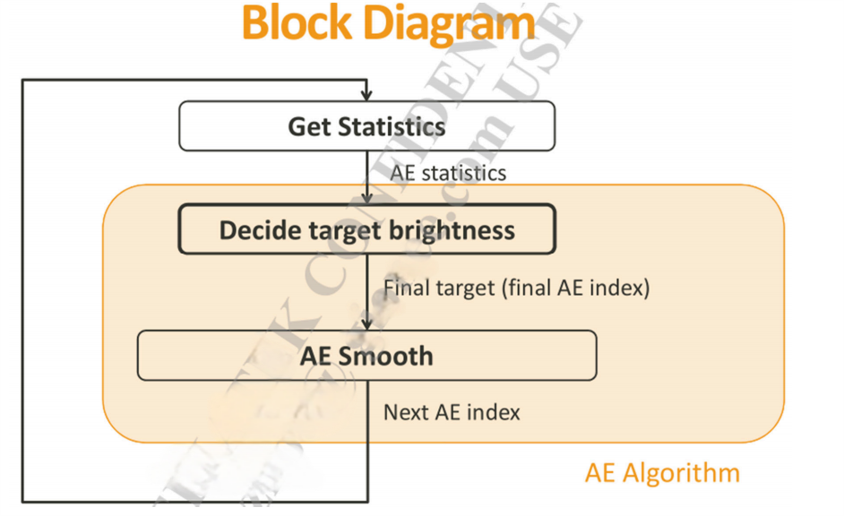
自动曝光的工作原理：硬件实时分析原始Raw图的亮度统计信息，匹配算法预设的场景模式，获取各模式的匹配程度，通过加权平均的方式计算出最终的目标亮度，再将曝光公式计算出的Shutter和Gain下发给Image Sensor。
如何决策Target Brightness?
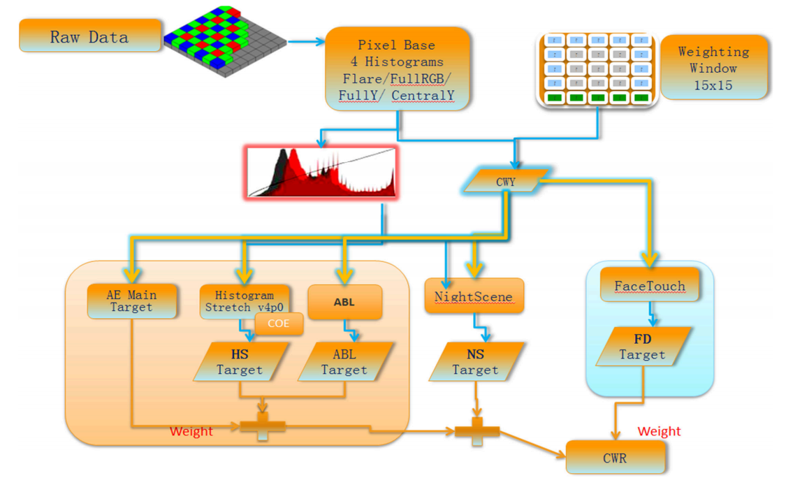
AE Mode 之“Histogram”
统计画面中各亮度的数量分布，再根据分布特征来决策目标亮度。
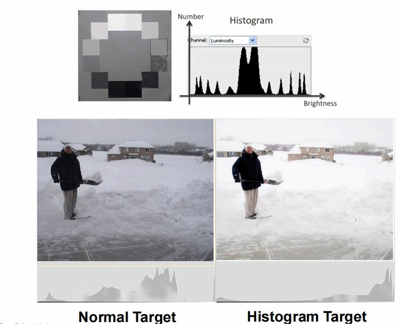
AE Mode 之“Anti-Backlight”
针对背景强亮度场景，根据ABL机制来动态调整背光权重及目标亮度。
AE Mode 之“Anti-OverExposure
针对背景强亮度场景，根据AOE机制来动态调整背光权重及目标亮度。
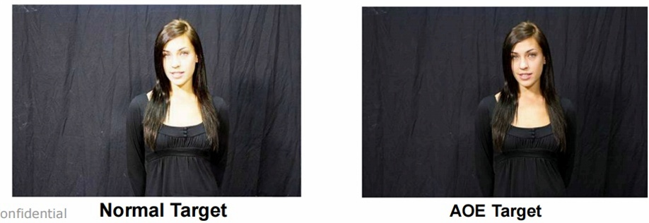
AE Mode 之“Night Scene”
针对夜景，根据图像的BrightTone和DarkTone动态调整曝光权重权重及目标亮度。
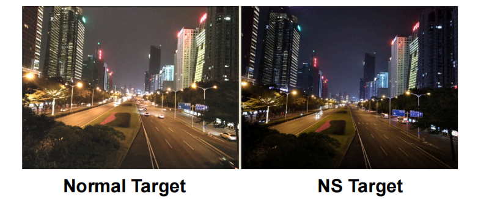
AE Mode 之“Face/Touch AE”
选取人脸区域或者触摸位置动态调整曝光权重权重及目标亮度。
AF (Auto Focus)
AF 光学模型
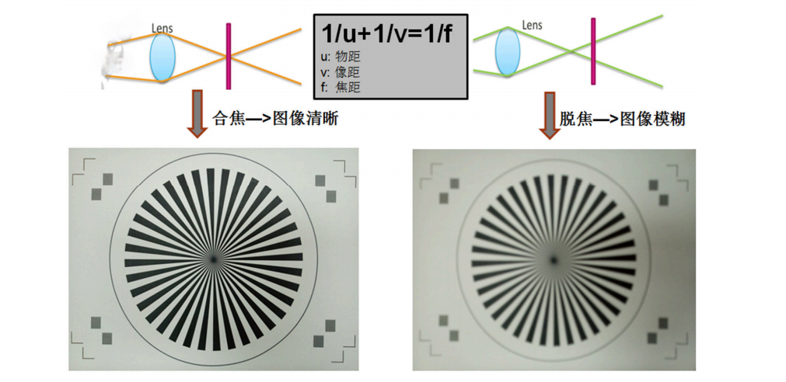
自动对焦的本质是通过微距离移动整个镜头(而不是镜头内的镜片)的位置,控制镜头焦距的长短,以满足合焦条件，从而实现影像的清晰。
VCM 原理
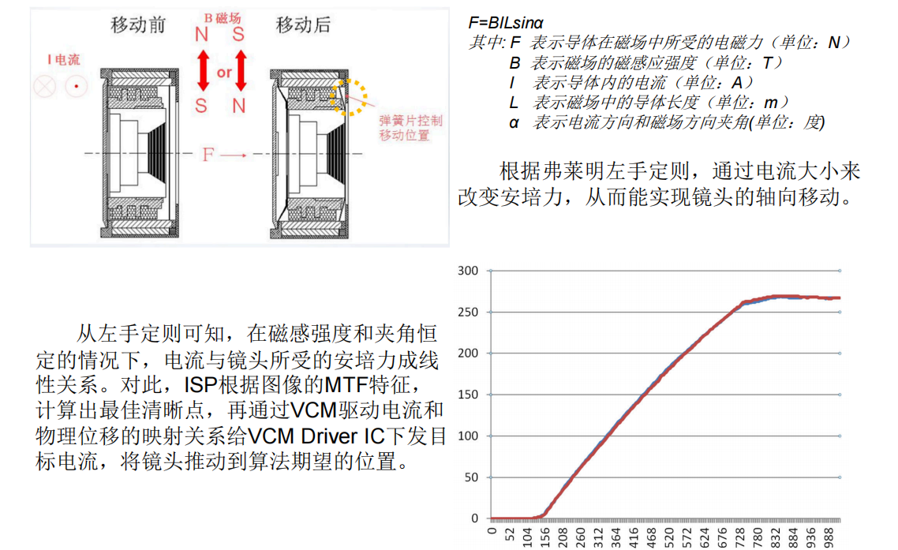
AF算法原理
常用的AF算法分主动式和被动式：
主动式：相机上的红外线发生器、超声波发生器发出红外光或超声波到被摄体。相机上的接受器接受反射回来的红外光或超声波进行对焦。如Laser AF。
被动式：ISP接收来自景物自身的反光, 根据焦点处画面的对比度或相位的变化，也就是准确对焦的位置， 进行自动对焦的方式。如Contrast AF及PDAF。
Contrast AF
Contrast AF的本质将图片对焦区域的对比度信息量化成Focus Value，再通过“大步搜索，小步拟合”的机制找到最佳合焦点。
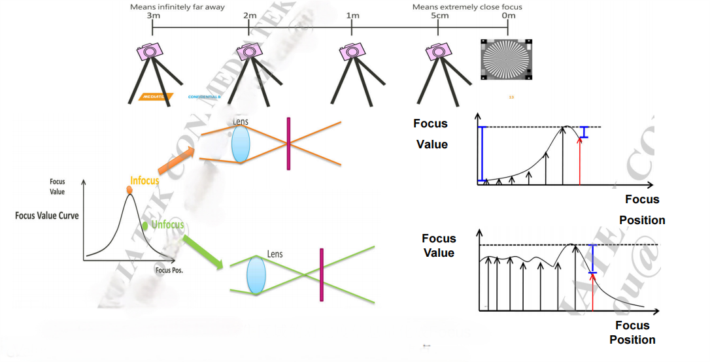
整个对焦过程可分解如下：
- 未合焦状态下，因为整个焦点的画面处于虚焦状态;
- 开始对焦，镜片开始移动，画面逐渐清晰，对比度开始上升；
- 合焦状态。画面最清晰，对比度最高，但相机并不知道，所以会继续移动镜头；
- 继续移动镜片发现对比度开始下降。进一步移动镜片，发现对比度进一步下降，机知道已经错过焦点；
- 镜片回退至对比度最高的位置，完成对焦。
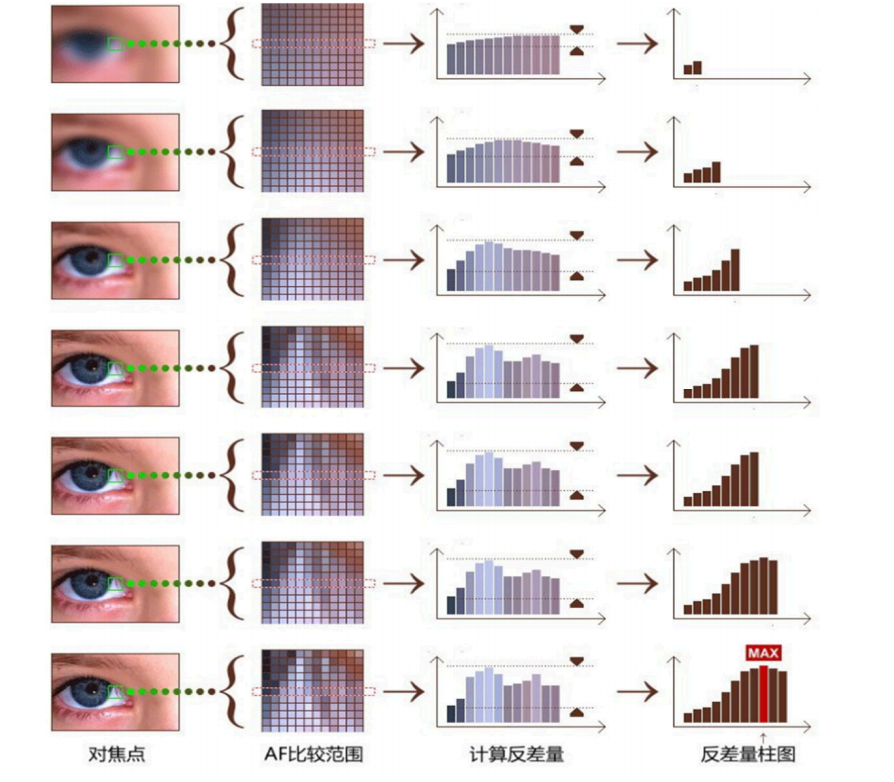
PDAF
图像的清晰度最好的时候是对比度最大的时候，同时也是像差最小的时候，反差式对焦就是通过找对焦区域对比度最大的点作为对焦准确的点，而相位对焦则是找对焦域相差最小的点作为对焦准确的点。
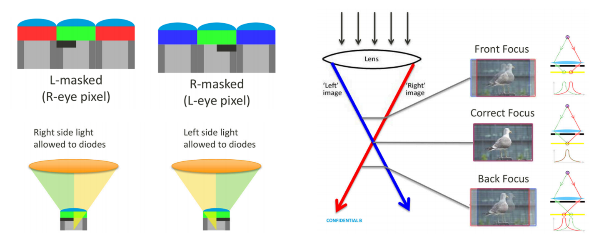
基于这一特征，Image Sensor在传统的Bayer Pattern的基础上，在成像区域成对增加掩膜像素PD Pixel, 部分像素只允许左侧的光进入，部分像素只允许右侧的光线入。然后比较左右PD Pixel形成的图像，通过算法解析出来相位差来判断镜头的移动方向和位移，从而达到对焦的目的。
Laser AF
Contrast AF和PDAF是被动式对焦方式，过于依赖图像本身的MTF特征或相位特征，具有一定的局限性。
激光对焦原理很简单，它利用红外激光集中性强不易扩散的特性，在后置摄像头旁边的增加红外激光传感器，向被摄物体发射低功率激光，经过目标反射后被传感器接收来计算目标到测试仪器的距离。对相机而言，知道了目标的距离，对焦以一步到位。
先进的Hybrid AF 已融合Contrast AF && PDAF && Laser来提升对焦速度和体验:在Laser有效距离内，优先通过Laser获取的目标距离来推动Lens;在PD Confidence可靠的前提下，先大步推动，再小步搜索；否则，启用原始的Contrast AF来爬坡寻找AF Peak点
Color 基础
色度学基础
什么是颜色
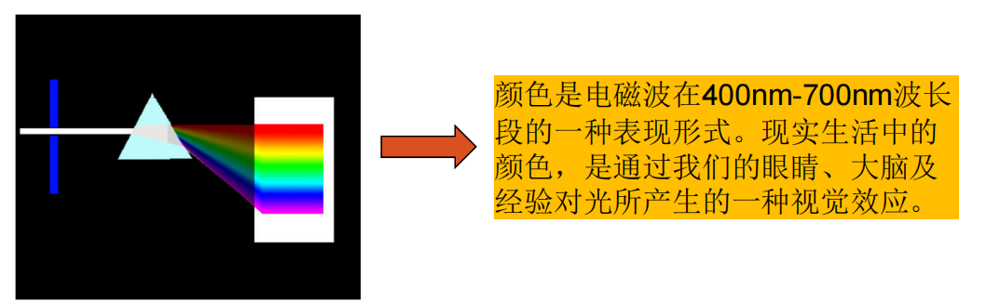
如何识别颜色
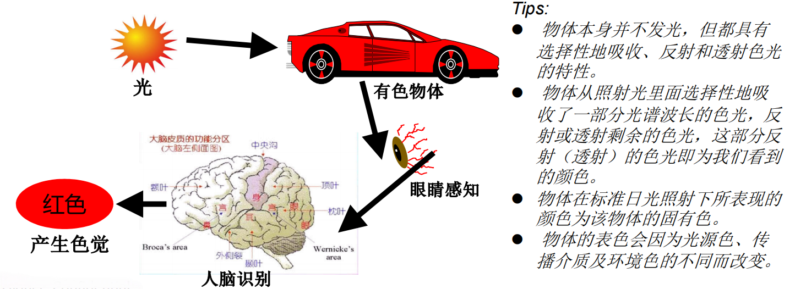
如何描述颜色
色彩分彩色和非彩色.
- （1） 非彩色
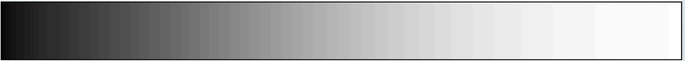
指黑色、白色及由黑白两色相融而成的各种深浅不同的灰色系列。
白色、黑色和灰色物体对光谱各波长的反射没有选择性，称为中性色. - （2）彩色
非彩色系以外的各种颜色均为彩色。
色彩3要素：色相，明度，纯度（饱和度）；
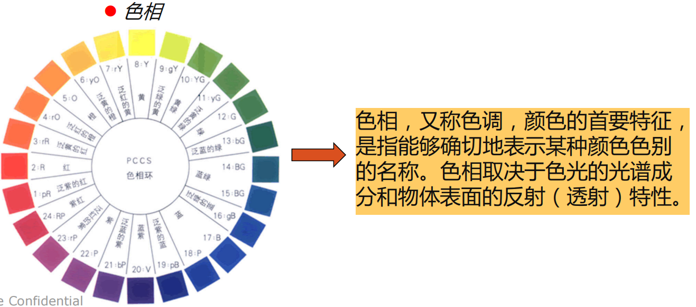
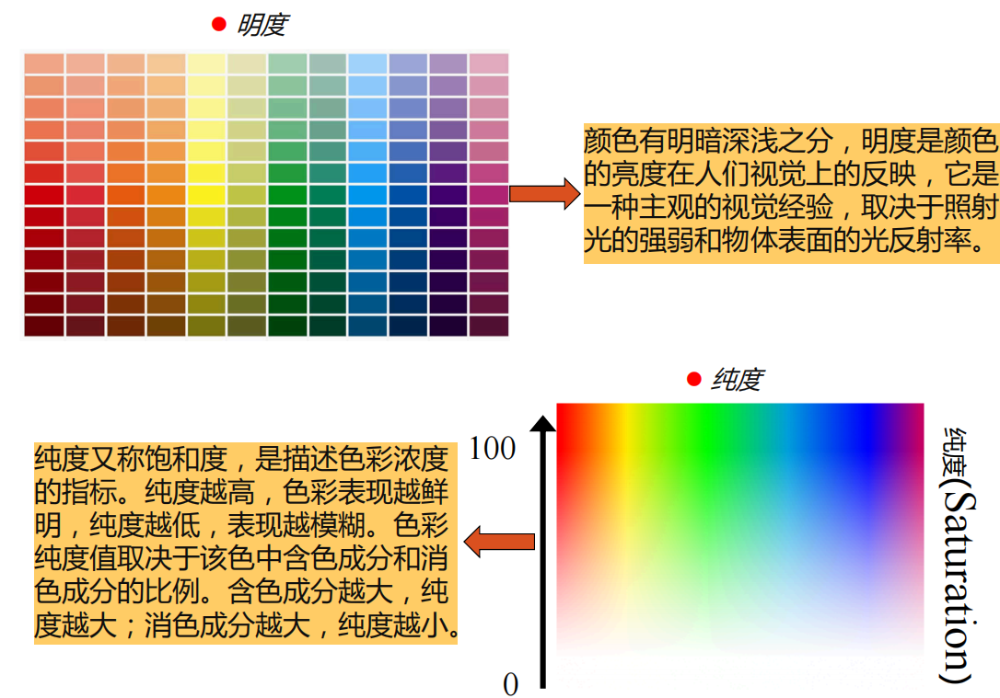如何量化颜色
国际照明委员会（CIE）致力于建立一套界定和测量色彩的技术标准，其出发点是用组成某一颜色的三基色比例来规定这一颜色。
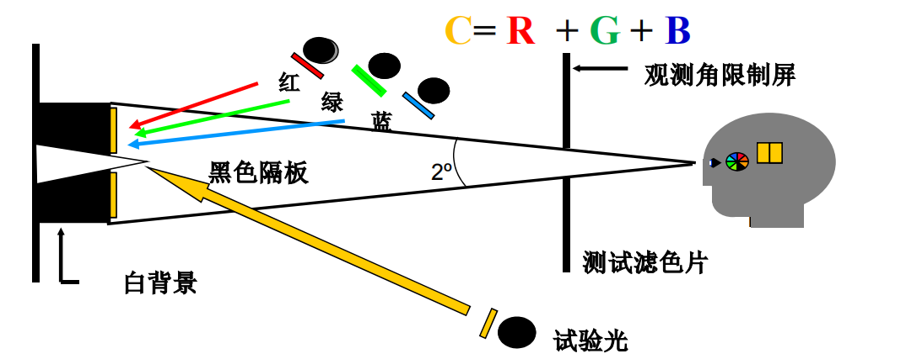
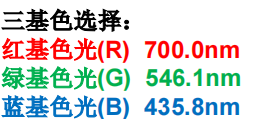
选择依据：红色位于可见光谱的末端，546.1nm的绿基色光和435.8nm的蓝基色光是两个较为明显的汞亮线谱。三者色纯度高，色彩鲜艳，比较容易从光谱中精确地分离出来，同时可以调配出多种颜色。
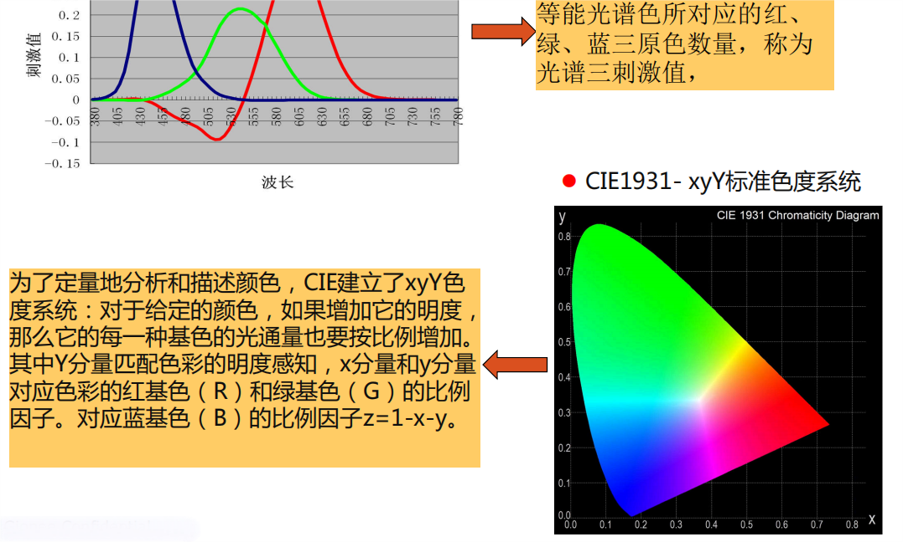Camera 如何还原颜色
人眼对色彩的识别，是基于人眼对光谱存在三种不同的感应单元，不同的感应单元对
不同波段的光有不同的响应曲线的原理，通过大脑的合成得到色彩的感知。
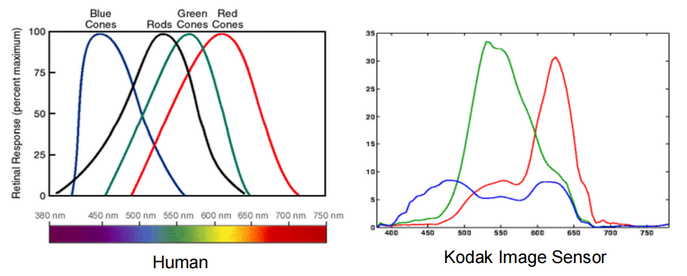
Image Sensor 对于RGB 三原色的响应与人眼具有较大差异，不同的sensor有不同的
光谱敏感度和不同的光电转换函数。即使对同一个影像拍摄，不同的sensor输出的数
据都不相同。为了取得一个“标准”的输出，就需要一个函数能校正输出结果，这个函数就是Color Matrix。Color Matrix是一个矩阵运算，它的作用是修正每个通道的值，使输出成为一个所谓的“标准”的结果，让不同的sensor达到对同一影像输出数据上的统一。
CCM输出的肤色不够红，草地不够绿，蓝天不够蓝HH 喜好色如何调整？变换颜色空
间，YCrCb空间接着处理。
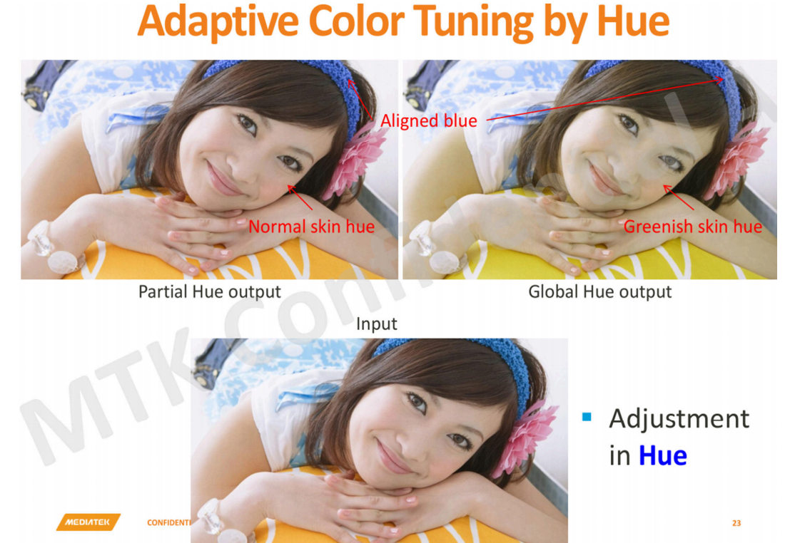
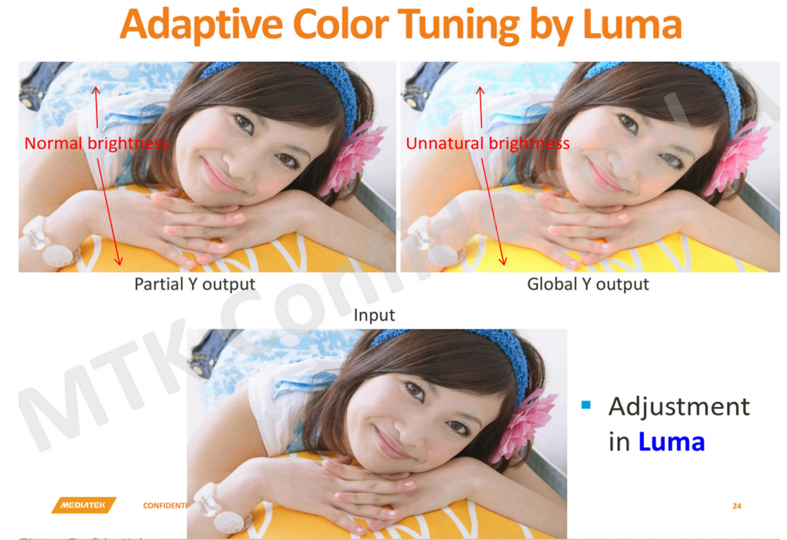
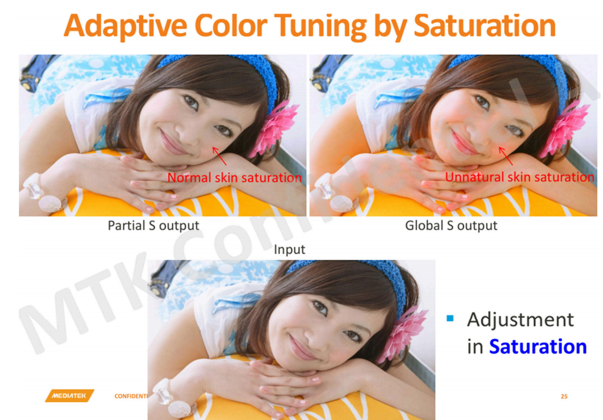
ISP 基础
ISP 是Image Signal Processor 的简称，也就是图像信号处理器, 在数码相机中扮演着Raw数据的Blacklevel补偿，Demosic, 坏点补偿，Shading校正，Gamma校正，动态加强，3A运算，色彩校正，色彩加强，降噪，锐化等一系列重要的角色。
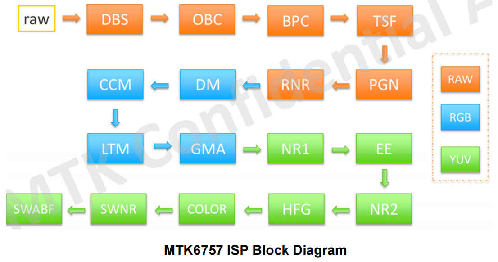
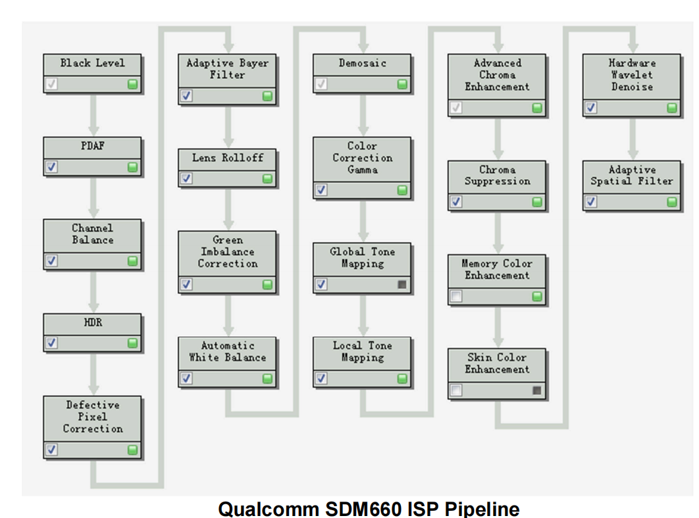
OB(Offset Blacklevel)
Image Sensor的电路本身会存在暗电流，及黑电平。黑电平会导致在没有光线照射的时候，像素单元也有一定的输出电压，影响图像的进一步处理。
为此，ISP在RAW图处理的初始阶段，需进行黑甲平校止和补偿。
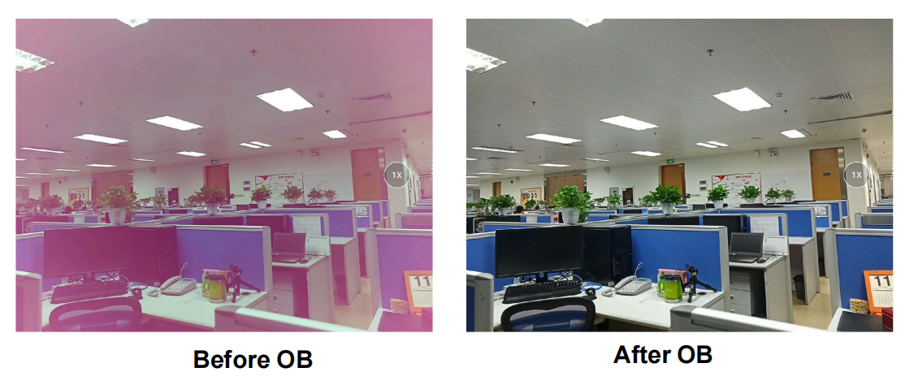
Shading补偿
镜头是圆形的，而Sensor是矩形，因此必然导致Sensor感测的通光量会从中心到边角衰减，及中心亮，边角暗。此为Lens Shading。对此需要通过ISP去给四周补偿，从而达到四周的亮度趋近于中心亮度。
但是由于各个场景下的色温不同，在某个色温下RGB三原色的透射能力不同(低色温R的透射能力强些，高色温B的透射能力强些),从而出现了四周和中心颜色有偏差的问题，此为Color Shading。对此ISP新增Table Smooth Function以针对不同色温Shading补偿机制做平滑。
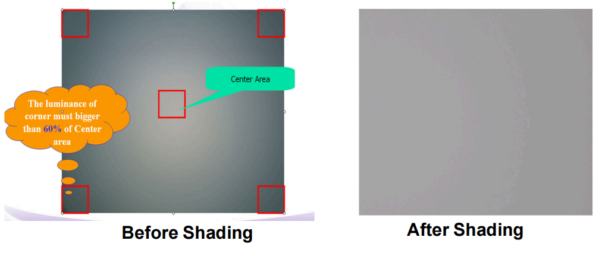
Gamma校正
人眼对外界光源的感光值与输入光强不是呈线性关系的，而是呈指数型关系的。直观感受体现在即对低灰阶的敏感度高于高灰阶。
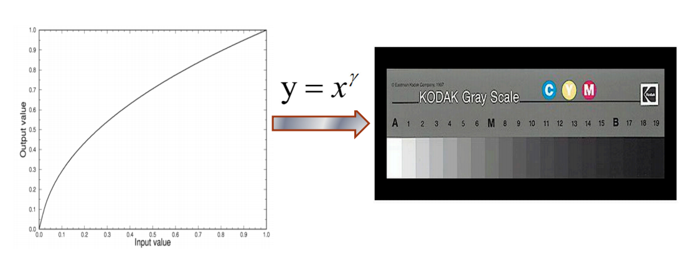
图像传感器的曝光正确，并不代表整体图像的亮度分布和人眼所见相同。还需要通过软件来调整不同亮度分布的增益，以拟合人眼的实际感知。
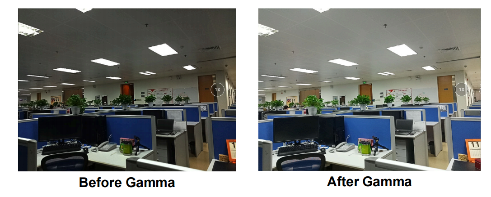
Gamma改变动态的同时，也影响颜色：
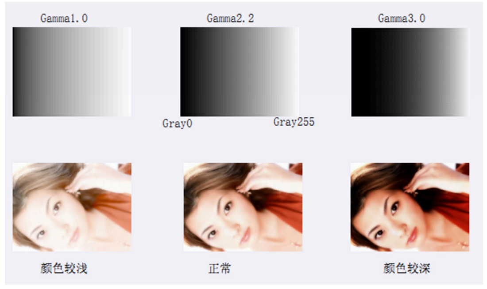
Denoise
由于像素光敏单元的光电二极管的场效应管，Image Sensor在信号采集的过程中不可避免地引入杂讯(噪点),在后续的曝光增益，Shading补偿，Gamma补偿及色彩加强过程中。杂讯被进一步进一步大，为此，在ISP的Pipeline末端需要对噪点做平滑或消除，以提高图像的信噪比。
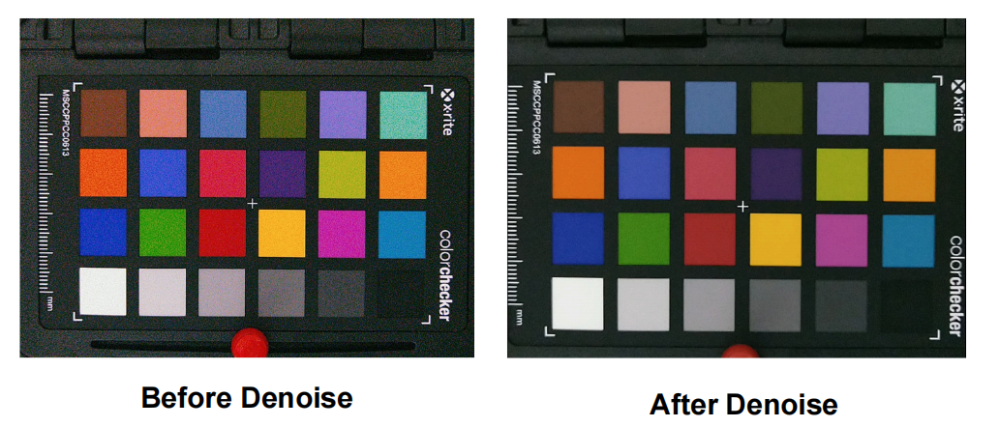
在Denoise过程中，将不可避免的导致图像Detail的丢失，因此Denoise的调试需结合Noise和Detail权衡评估。
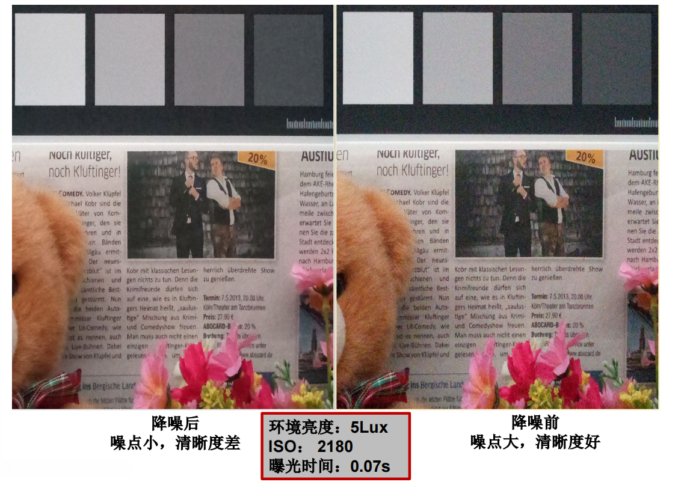
Sharpness
为减小Denoise后图像细节丢失的问题，ISP有Sharpen模块增强图像边沿，提高锐度和清晰度。
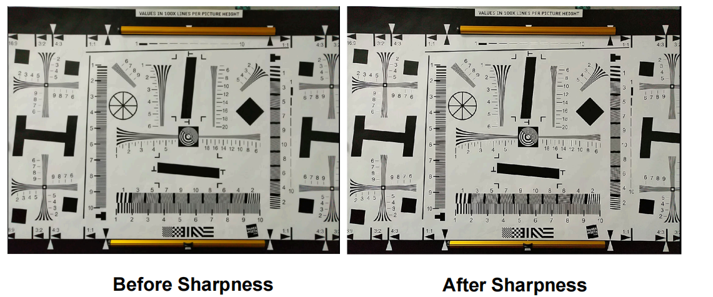
在Sharpen过程中，将不可避免的导致图像残留Noise的被放大，为此Sharpness的调试需结合Noise和Detail权衡评估。